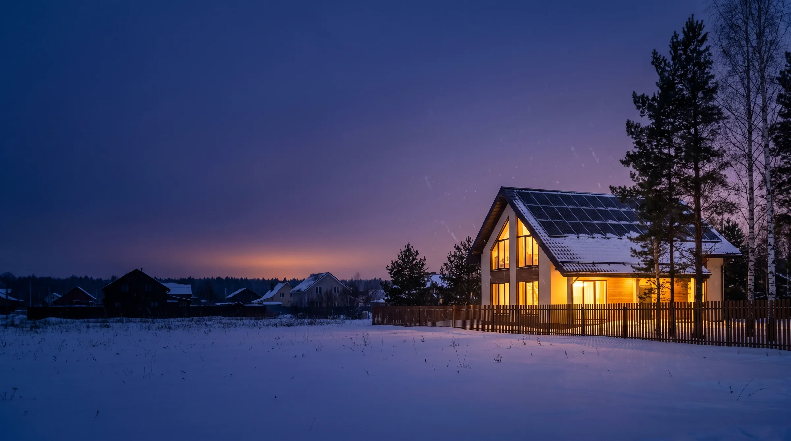
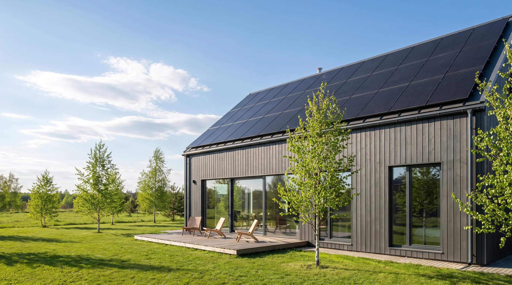
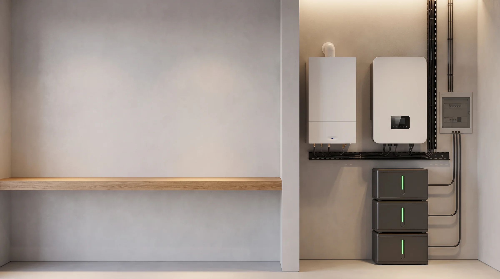

Что продаём
Солнечные панели, аккумуляторы LiFePO4 и гибридные инверторы — готовыми комплектами и по отдельности. Монтаж — свой или через партнёров (уточнить).
Черновик · 10 октября 2026
Собрали его по разговору 7 октября: вы закупаете солнечные панели, аккумуляторы и инверторы и готовитесь к росту спроса на резервное питание. Это не готовый сайт, а основа для разговора: посмотрите, выберите вариант дизайна, отметьте, что нравится и что нет, — дальше правим вместе.
Солнечные панели, аккумуляторы LiFePO4 и гибридные инверторы — готовыми комплектами и по отдельности. Монтаж — свой или через партнёров (уточнить).
Владельцам частных домов и дач: котёл, насос скважины, септик, холодильник. Отдельно — квартиры: резерв для света, холодильника и интернета.
Не «зелёная энергия ради экономии», а «свет и тепло, когда отключили сеть». Электричество в России дешёвое, экономия — слабый довод. Надёжность — сильный.
Там, где отключения стали регулярными, спрос рос скачком, а оборудование дорожало и пропадало. Вы закупаете заранее — сайт должен быть готов поймать спрос, когда он начнётся.
Чего мы не знаем и не выдумывали: название, регион, бренды и цены закупки, наличие склада, монтаж и гарантию. На сайте это стоит как пример — включите на сайте «Что уточнить у Олега», и все такие места подсветятся.
Содержание у всех трёх одинаковое, отличаются подача, цвет, шрифты и первый экран. Переключаются кнопкой внизу сайта.

ВечерТёмный посёлок, светится только ваш дом. Сильнее всего продаёт главную мысль — «у соседей темно, у вас свет», без запугивания.

ДеньСветлый, «скандинавский», как у европейских солнечных компаний. Для тех, кто думает о независимости и солнце, а не только о резерве.

МастерОборудование крупно, выноски с характеристиками, жёлто-чёрный «строительный» стиль. Ближе всего к хозяйственным магазинам и покупателю, который сравнивает железо.
Всё кликается, но заявки никуда не отправляются: это черновик для обсуждения.
Лучшие сайты там, где отключения стали частью жизни, и лучшие по дизайну в мире. Откройте, что понравится, — перенесём приём.
Переключатель «сеть есть / отключение» на объёмном домике: сцена темнеет, а окна продолжают гореть. Взяли: живую схему с режимами «сеть есть / пропала / солнце».
basepowercompany.comНочной дом в грозу на первом экране, сценарии вкладками, в характеристиках — пусковой ток моторов. Взяли: ночной первый экран и проверку пуска насоса в калькуляторе.
tesla.com/powerwallДом «в разрезе» со всем оборудованием, шкала «6 недель до своей станции», клиент с «паспортом системы». Взяли: сроки на каждом шаге работы.
enpal.de/notstromПриоритеты нагрузок «всегда / до 50% заряда / отключить» и график, сколько продержится дом. Следующий шаг: добавить приоритеты в наш калькулятор.
span.ioУровни комплектов с табло «сколько часов проработает». Взяли: у каждого комплекта — часы работы и метка «чаще всего выбирают».
jackery.comРейтинг с числом отзывов, цены прямо в ответах на вопросы, ссылка «откуда наши цифры». Взять потом: когда появятся реальные клиенты и отзывы.
octopus.energy/solarЛучший найденный в России: калькулятор без контактов, комплекты «5 кВт · 5 кВт·ч — от 240 тыс. ₽» и «10 кВт — от 425 тыс. ₽» под ключ, сравнение с генератором, карта отключений по районам. Слабее по фото и эмоции.
persentr.ruСтраница комплекта: выбор ёмкости модулями, таблица «сколько часов проработает дом», «ИБП или генератор». Интересная плашка «остерегайтесь поддельных сайтов». Визуал простой.
run-power.ruБольшинство российских сайтов в этой нише — каталоги или простые лендинги с таблицами. Эмоции «у соседей темно, у вас свет», живой схемы и калькулятора по приборам почти ни у кого нет.
Блок «потянет / не потянет», раскладка цены по компонентам, заявка через WhatsApp. Взяли: «потянет / не потянет» под комплектами — снимает возражения и будущие претензии.
ourpower.co.zaСолнце и резерв по подписке: линейка тарифов, честные «±3 часа резерва», допродажа «ещё одна батарея», три канала заявки. Идея на будущее — аренда вместо покупки.
gosolr.co.zaПродают не железо, а ответ «что будет работать и сколько часов». Честно говорят, что не потянет и что зимой солнца мало. Заявку берут в мессенджер в один шаг.
Для вашего решения по ассортименту и ценам. На сайт эти цифры не выносили — только как ориентир.
Пик ажиотажа короткий. В ЮАР ввоз солнечных панелей вырос с 5,6 до 17,5 млрд рандов за год, а когда отключения прекратились, упал примерно в пять раз; крупный маркетплейс Hohm Energy закрылся. В Ливане заказы у установщика к 2024 году упали на 80%, а оптовики, чьи партии пришли через 4–6 месяцев, продавали уже в убыток. Выигрывает тот, у кого товар на складе и монтаж за дни. Закупать лучше партиями, а после пика держаться на сервисе и втором доводе — защите техники от просадок напряжения и расширении до солнечной станции.
Источники: EWN, 16.09.2024; данные TIPS по поисковой выдаче; L'Orient Today, 13.05.2024 — подробно в research/01_кризисные_рынки.md«Дом» под ключ: гибридный инвертор 6 кВт + LiFePO4 10 кВт·ч, Москва, октябрь 2026. У конкурентов: Persentr 10 кВт — от 425 тыс., СветРезерв — 295 тыс., на Яндекс Маркете система 5 кВт / 5 кВт·ч — 231 тыс.
research/03_рынок_России.md, раздел 2За 1 кВт·ч LiFePO4 48 В: бюджетные 19–24 тыс., бренды (Deye, Pylontech, Dyness) 24,5–31 тыс. Гибридный инвертор 6 кВт: Anenji и Must — 31–62 тыс., Deye и SRNE — 110–152 тыс.
магазины и маркетплейсы на 10.10.2026кВт·ч в сутки с 1 кВт панелей в Москве: декабрь → июнь. За год около 970 кВт·ч. Под снегом зимой — почти ноль, поэтому зимой резерв держат аккумулятор и генератор.
PVGIS 5.3, юг, наклон 41°Столько по правилам частный дом может быть без света: до 24 часов подряд и до 72 часов в год. Средняя статистика «Россетей» скромная, но после снега и ледяного дождя деревни сидят без света 2–6 суток, а СНТ подключают последними.
ПП № 861, п. 31(6)Столько ждали домашние генераторы в Техасе после зимнего шторма 2021 года: при всплеске спроса первыми пустеют склады. Выигрывает тот, у кого товар уже есть.
Generac, отчёт инвесторам 29.04.2021В Рунете в основном каталоги и «солнце ради экономии» (первое место в Яндексе по солнечным станциям в Подмосковье продаёт именно экономию). Резерв с понятным ответом «что будет работать и сколько часов» почти никто не делает.
research/02 и research/03Правила 2026 года, если дойдёт до продажи излишков в сеть: с 01.09.2026 порог 15 кВт для микрогенерации из закона убран, частный дом может отдавать в сеть до 50 кВт (распоряжение № 2675-р от 26.09.2026), НДФЛ с продажи излишков нет до 2029 года. Для полностью автономной системы ничего оформлять не нужно. Источники — в research/03_рынок_России.md, раздел 6.
Можно голосом или списком в Telegram — разберём и подставим.
Вы выбираете вариант дизайна и отвечаете на вопросы выше.
Подставляем реальные товары, цены, фото, контакты. Убираем пометки черновика.
Делаем мобильную версию: большинство заявок придут с телефонов.
Домен, хостинг в России, заявки в Telegram, Яндекс Метрика, карточка в Яндекс Картах.
Яндекс Директ по запросам «резервное питание для дома», «инвертор с аккумулятором для котла»; Авито.